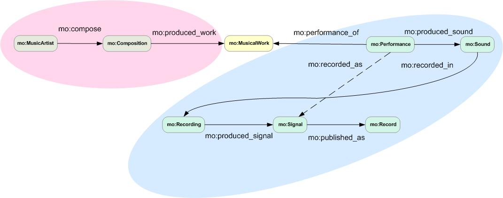

For data stored in multiple tables in a relational database we need a more expressive way of defining mappings to an RDF dataset. R2RML (Relational Database to RDF Mapping Language) [4] can be used to express mappings between a relational database and RDF that can then be handled by an R2RML engine. R2RML can be used to publish RDF from relational databases in two ways. First, the data could be transformed in batch as an RDF dump. This dump could then be loaded into a RDF triplestore. The endpoint of the triplestore could then be used to run SPARQL queries against the RDF dataset. Second, the R2RML engine could be used to translate SPARQL queries on-the-fly into SQL queries that can be run against the relational database.
Figure 33: Integrating relational databases and linked data.
In 2012, the W3C made two recommendations for mapping between relational databases and RDF [25]. The first recommendation defines a direct mapping between the database and RDF. This does not allow for vocabulary mapping or interlinking, just the publishing of database content in an RDF format without any additional transformation. The direct mapping recommendation is not relevant here as are we also wish to map items in the database (for example music artists) to existing URIs even though those URIs are not included in the database itself.
The second recommendation is R2RML that provides a means of assigning entities in the database to classes and mapping those entities in subject-predicate-object triples. It also allows the construction of new URIs for entities and interlinking them with the rest of the RDF graph.
Figure 3.34 shows the core database tables and relationships in the MusicBrainz Next Generation Schema (NGS) that was released in 2011. In the diagram, the Primary Key (PK) of a table indicates that each entry in that column can be used to uniquely reference a row. A Foreign Key (FK) uniquely identifies a row in another table. MusicBrainz NGS provides a more complex way of modelling musical releases. For example, before NGS it was not possible to relate together multiple releases of the same album at different times and in different territories.
The NGS defines an Artist Credit that can be used to model variations in artist name. This can describe multiple names for an individual and different names for various groups of artists. For example, the song “Get Back” is credited to “The Beatles with Billy Preston” rather than “The Beatles”. This would be difficult to represent in MusicBrainz without NGS.
Another major change in MusicBrainz NGS is how musical releases are modelled. A Release Group is an abstract “album” entity. A Release is a particular product you can purchase. A Release has a release date in a particular county and on a particular label. Many releases can belong to the same Release Group. A Release may have more than one Medium (such as MP3, CD or vinyl). On each Medium, the Release will have a tracklist comprising a number of tracks. Each track has a Recording that is a unique audio version of the track. This could be used, for example, to distinguish between the single and album versions of a track. Artist Credit can be assigned to each individual track as well as the Recording, Release and Release Group. Artist Credit can also be assigned to a Work, which represents the composed piece of music as distinct from its many recordings.
Figure 34: Relational Schema for the Music Database.
In Figure 3.35 we can see a few core classes in the Music Ontology to which we can map when generating RDF data from data represented in the MusicBrainz NGS Relational Database. The Music Ontology models a MusicArtist as composing a Compostion, which is then produced as a MusicalWork. A Performance of a MusicalWork can be recorded as a Signal that can be Produced from Recordings of that Performance.

Figure 35: The Music Ontology (from [26]).
Mapping a database table to a class in an ontology is relatively straightforward. Here we will map the Artist table in MusicBrainz NGS to the MusicArtist class in the Music Ontology. Mappings in R2RML are mostly specified as instances of what are referred to TriplesMaps. The TriplesMap specified below has the identifier lb:Artist. The logicalTable is the source data table from which the triples are derived. In this case the logicalTable is the table named “artist” in the relational database. As we shall see in the next example, the logicalTable can also be the result of a SQL query across a number of tables rather than a single table in the database.
The subjectMap defines the subject of the triple. The subject is constructed as a MusicBrianz URI with the entry from the gid column of the Artist table being inserted between http://musicbrainz.org/artist/ and the # symbol. The specified predicate is mo:musicbrainz_guid which links a MusicBrianz URI to its ID in the form of a string. The object of the triple is also the entry from the gid column but represented as a string.
lb:Artist a rr:TriplesMap ;
rr:logicalTable [rr:tableName "artist"] ;
rr:subjectMap
[rr:class mo:MusicArtist ;
rr:template
"http://musicbrainz.org/artist/{gid}#_"] ;
rr:predicateObjectMap
[rr:predicate mo:musicbrainz_guid ;
rr:objectMap [rr:column "gid" ;
rr:datatype xsd:string]] .
Database columns can also be mapped to properties. In the example below we supply a name property to each of the MusicBrianz URIs generated in the previous example. In this case the logicalTable used in the TriplesMap is an SQL query that returns a table of results. This query joins two tables to link the gid of an artist to the artist’s name. The subject of the triple is the same as the subject specified using the TriplesMap from the previous example. The predicate is foaf:name. The object is the name column from the logicalTable
lb:artist_name a rr:TriplesMap ;
rr:logicalTable [rr:sqlQuery
"""SELECT artist.gid, artist_name.name
FROM artist
INNER JOIN artist_name ON artist.name = artist_name.id"""] ;
rr:subjectMap lb:sm_artist ;
rr:predicateObjectMap
[rr:predicate foaf:name ;
rr:objectMap [rr:column "name"]] .
MusicBrainz Next Generation Schema (NSG) also provides Advanced Relationships as a way of representing various inter-relationships between key MusicBrainz entities such as Artist, Release Group and Track. The table l_artist_artist is used to specify relationships between artists. Each pairing of artists would be represented as a row in the l_artist_artist table. Each pairing of artists refers to a Link. One link would be member_of that would specify a relation between an artist and a band of which they were a member.
Figure 36: NGS Advanced Relations.
The R2RML triplesmap below shows how we would specify that an artist is a member of a band. Here the logicalTable is the result of a complex query that associates artists with a band. The Music Ontology member_of predicate is used to asociate an artist with a MusicBrainz URI identifying the band.
lb:artist_member a rr:TriplesMap ;
rr:logicalTable [rr:sqlQuery
"""SELECT a1.gid, a2.gid AS band
FROM artist a1
INNER JOIN l_artist_artist ON a1.id = l_artist_artist.entity0
INNER JOIN link ON l_artist_artist.link = link.id
INNER JOIN link_type ON link_type = link_type.id
INNER JOIN artist a2 on l_artist_artist.entity1 = a2.id
WHERE link_type.gid='5be4c609-9afa-4ea0-910b-12ffb71e3821'
AND link.ended=FALSE"""] ;
rr:subjectMap lb:sm_artist ;
rr:predicateObjectMap
[rr:predicate mo:member_of ;
rr:objectMap [rr:template "http://musicbrainz.org/artist/{band}#_" ;
rr:termType rr:IRI]] .